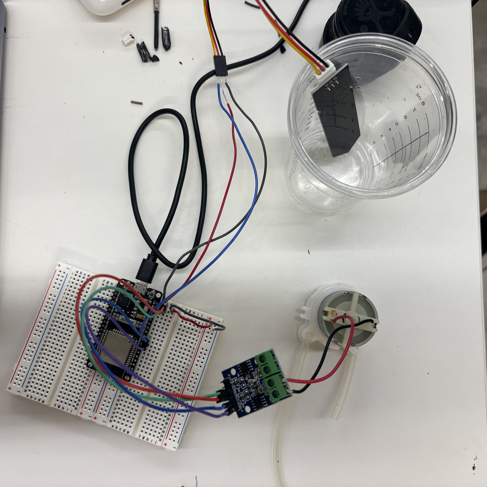
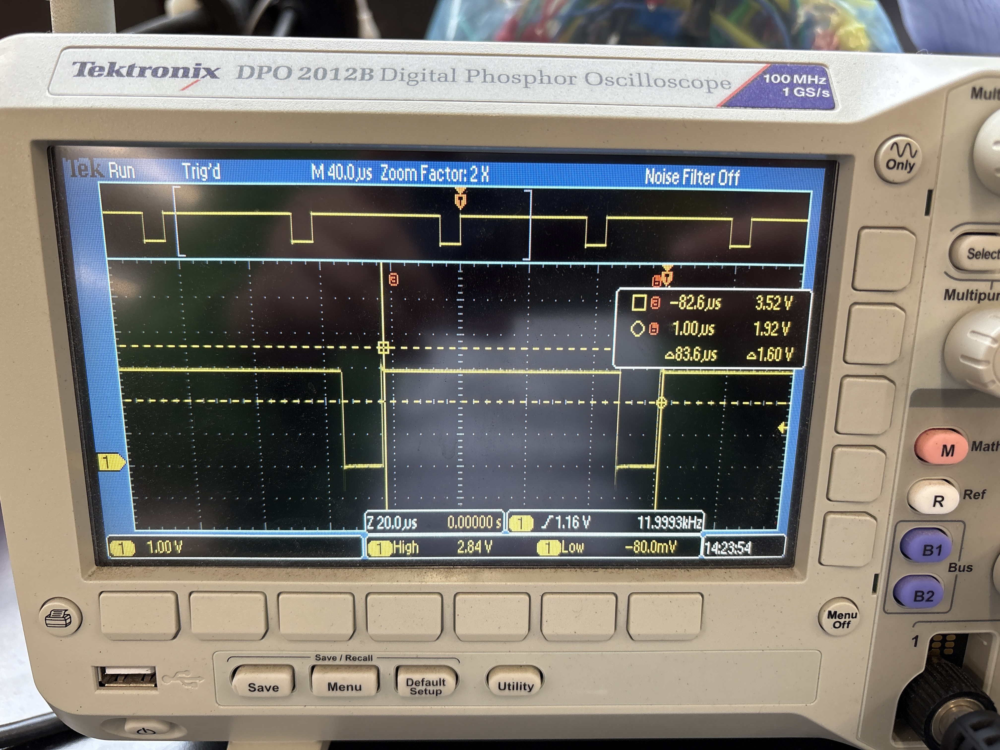

<div class="textcontainer">
<p class="margin"> </p>
<h1>⬅️ Week 7: Electronic Outputs ➡️</h1>
<br></br>
<h2 class="p1">Part I: Final Project MVP</h2>
<br></br>
<p>This week, I tackled the minimum viable product for my greenhouse: an <span class="s1">automatic watering system</span> that turns on only when the soil is dry. I expect this to be the trickier of my two planned automations (watering and grow lights), since the lights will just run on a timer, while watering requires tuning a bunch of parameters &mdash; how &ldquo;dry&rdquo; is dry enough, how long to pump, how much water to deliver, etc.</p>

<p style="text-align: center;"><em>My moisture sensor + ESP32 + motor driver + 5V pump setup!</em></p>
<p>I used one of the <span class="s1">capacitive soil moisture sensors</span> from the lab and a <span class="s1">5V DC water pump</span> driven by an <span class="s1">L9110 motor driver</span>. Using the class structure we practice in lab, I wrote Arduino code that constantly reads and prints out soil moisture, compares it against pre-set thresholds (which I&rsquo;ll keep refining as I calibrate the sensor), and activates the pump when the soil is deemed &ldquo;dry.&rdquo;</p>
<title>Water Pump Arduino Code</title>
<style>
pre {
background-color: #f4f4f4; /* gray box */
padding: 15px;
border-radius: 5px;
overflow-x: auto;
}
code {
font-family: monospace;
background: none; /* make sure text itself has no gray background */
color: black;
}
</style>
</head>
<body>
<pre><code>
class AutoWaterSystem {
public:
// Constructor: assign pin numbers
AutoWaterSystem(int soilPin, int pumpAIA, int pumpAIB)
: SOIL_PIN(soilPin), AIA_PIN(pumpAIA), AIB_PIN(pumpAIB) {}
void begin() {
Serial.begin(115200);
delay(300);
analogReadResolution(12);
pinMode(AIA_PIN, OUTPUT);
pinMode(AIB_PIN, OUTPUT);
pumpSet(false);
Serial.println("AutoWaterSystem initialized");
}
void calibrateWet(int value) { WET_ADC = value; }
void calibrateDry(int value) { DRY_ADC = value; }
void loop() {
int raw = analogRead(SOIL_PIN);
int avg = smoothAdd(raw);
int dry = drynessPercent(avg);
static unsigned long lastPrint = 0;
if (millis() - lastPrint > 1500) {
lastPrint = millis();
Serial.print("RAW="); Serial.print(raw);
Serial.print(" AVG="); Serial.print(avg);
Serial.print(" WET_ADC="); Serial.print(WET_ADC);
Serial.print(" DRY_ADC="); Serial.print(DRY_ADC);
Serial.print(" dryness%="); Serial.println(dry);
}
// simple threshold example
if (dry >= DRY_THRESHOLD && !pumpOn) pumpSet(true);
if (dry < DRY_THRESHOLD - 10 && pumpOn) pumpSet(false);
}
private:
const int SOIL_PIN;
const int AIA_PIN;
const int AIB_PIN;
int WET_ADC = 1400;
int DRY_ADC = 3000;
int DRY_THRESHOLD = 40;
const int N = 10;
int buf[10]; int idx = 0; bool filled = false;
bool pumpOn = false;
int smoothAdd(int v) {
buf[idx++] = v; if (idx >= N) { idx = 0; filled = true; }
long sum = 0; int count = filled ? N : idx;
for (int i = 0; i < count; i++) sum += buf[i];
return (int)(sum / (count == 0 ? 1 : count));
}
int clampi(int v, int lo, int hi) { return v < lo ? lo : (v > hi ? hi : v); }
int drynessPercent(int avg) {
if (WET_ADC == DRY_ADC) return 0;
if (DRY_ADC > WET_ADC) {
float frac = float(avg - WET_ADC) / float(DRY_ADC - WET_ADC);
return clampi(int(frac * 100), 0, 100);
} else {
float frac = float(WET_ADC - avg) / float(WET_ADC - DRY_ADC);
return clampi(int(frac * 100), 0, 100);
}
}
void pumpSet(bool on) {
pumpOn = on;
digitalWrite(AIA_PIN, on ? HIGH : LOW);
digitalWrite(AIB_PIN, LOW);
Serial.println(on ? "Pump ON" : "Pump OFF");
}
};
// === Instantiate the class ===
AutoWaterSystem plant(27, 26, 25);
void setup() {
plant.begin();
// optionally calibrate:
// plant.calibrateWet(1450);
// plant.calibrateDry(2950);
}
void loop() {
plant.loop();
}
</code></pre>
<p>For testing, I grabbed some soil from outside the Harvard Science Center. When the sensor sat in dry soil&mdash;or even just dry air&mdash;the pump&nbsp;switched&nbsp;on. Once the soil was saturated, the pump turned off again. Yay!</p>
<div style="text-align: center;">
<video width="300" controls>
<source src="IMG_6353.MOV" type="video/mp4">
Your browser does not support the video tag.
</video>
</div>
<p>I also designed and 3D-printed a simple <span class="s1">pump housing</span> to hold the motor at the right height, plus two <span class="s1">prototype pots</span>: one as the water reservoir and one as the plant pot. The final version will have a <span class="s1">wheel-thrown ceramic pot</span>, both for function and vibes.</p>
<p>[IMAGE TBD]</p>
<p>With the help of <span class="s1">Bobby, Jessica, and Alyssa</span>, I also tried measuring the motor&rsquo;s time domain on an <span class="s1">oscilloscope</span>. After thirty minutes of collective&nbsp;troubleshooting (and Bobby saying things like <em>&ldquo;everything about this is confusing&rdquo;</em>), we realized the problem: the 5V power line (which we unplugged to avoid drawing too much current from my laptop) had been mistakenly plugged into a random port on the breadboard. Once fixed, the readings made sense: an <span class="s1">83.6 ms total cycle</span>, with roughly <span class="s1">71 ms &ldquo;on.&rdquo;</span></p>

<p style="text-align: center;"><em>Oscilloscope results</em></p>
<p>Working on the MVP this week inspired the following questions I will continue to evaluate as I build up to the final version of this project:</p>
<ul>
<li><p class="p1">How should the <strong>pump housing and water reservoir fit into the greenhouse</strong>? Maybe a tray underneath so it stays hidden, or the pump attached to the outside of the acrylic frame with an opaque cover?</li>
<li><p class="p1">Do I want a <strong>drip irrigation system (functional and simple) or a mister </strong>(more eye-catching perhaps less functional in terms of delivering water to the soil and definitely harder to build)?</li>
<li><p class="p1">What are the right <strong>thresholds for "wet" and "dry" soil</strong>? This may be dependent on what plant I decide to grow in the greenhouse!</li>
<li><p class="p1">How should I mount and control the <strong>grow lights</strong>? By <span class="s1">light sensor</span> or <span class="s1">time of day?</span>&nbsp;</li>
</ul>
</div>